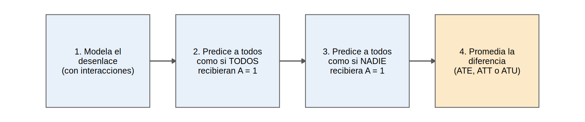
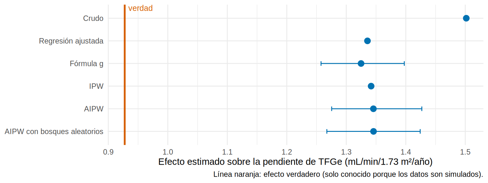

library(tidyverse)
library(marginaleffects)
library(boot)
source("R/funciones_epi.R")
source("R/funciones_extra_cap1213.R")
oraculo <- cargar_oraculo()
ckd <- observado(oraculo)
verdad <- verdad_pendiente(oraculo)
x <- confusores_medidos # "I(edad / 10) + sexo + hba1c + pas + tfg_basal + luacr + ecv"Fórmula g y estimadores doblemente robustos: predecir y promediar
Nota🩺 Escenario
De cada paciente solo ves una película: la que ocurrió (con iSGLT2, o sin él). Te gustaría ver también la otra: ¿cómo habría evolucionado ese mismo paciente con el fármaco y sin él? No puedes, pero un modelo del desenlace puede imaginar la película que falta. Si imaginas las dos para todos los pacientes y comparas los promedios, tienes un efecto causal.
Eso es la estandarización o fórmula g (g-computation): ajustas un modelo del desenlace, predices a cada paciente dos veces (“¿y si todos hubieran recibido el fármaco?”, “¿y si ninguno?”) y promedias la diferencia. Es la generalización de la estandarización por edad del Cap. 7.5, solo que ahora cada paciente es su propio estrato. A diferencia del emparejamiento y del IPW, no necesita el PS.
Después veremos el estimador AIPW, que combina el modelo del desenlace y el del PS: cinturón y tirantes. Si uno falla, el otro te sostiene el pantalón.
Lo que vamos a hacer
- Hacer una fórmula g paso a paso (continuo y binario) y calcular ATE, ATT y ATU.
- Estimar un AIPW y ver por qué es “doblemente robusto”.
- Comparar todos los métodos del capítulo contra la verdad.
Paso a paso: la fórmula g

Pasos 1-3: modelar y predecir las dos películas
El modelo del desenlace lleva interacciones con el tratamiento (el efecto cambia con las covariables), y luego predecimos dos veces cambiando solo la columna isglt2:
modelo_y <- lm(as.formula(paste("pendiente_tfg ~ isglt2 * (", x, ")")), data = ckd)
ckd <- ckd |>
mutate(mu1 = predict(modelo_y, newdata = mutate(ckd, isglt2 = 1)), # si TODOS iniciaran
mu0 = predict(modelo_y, newdata = mutate(ckd, isglt2 = 0)), # si NINGUNO iniciara
efecto_pred = mu1 - mu0)Veamos qué pasó en seis pacientes. Observas un resultado por paciente (las otras celdas están vacías); el modelo rellena las dos, y como los datos son simulados, también conocemos el efecto verdadero de cada uno:
ckd |>
left_join(select(oraculo, id, efecto_verdadero = ite), by = "id") |>
slice(1:6) |>
transmute(id, tratamiento = trat,
`Y1 observado` = if_else(isglt2 == 1, pendiente_tfg, NA_real_),
`Y0 observado` = if_else(isglt2 == 0, pendiente_tfg, NA_real_),
`Y1 predicho` = mu1, `Y0 predicho` = mu0, `Efecto predicho` = efecto_pred, `Efecto verdadero` = efecto_verdadero) |>
knitr::kable(digits = 2)| id | tratamiento | Y1 observado | Y0 observado | Y1 predicho | Y0 predicho | Efecto predicho | Efecto verdadero |
|---|---|---|---|---|---|---|---|
| 1 | Inicia iSGLT2 | -0.07 | NA | -1.21 | -2.32 | 1.11 | 0.68 |
| 2 | No inicia | NA | -2.38 | -1.87 | -2.92 | 1.05 | 0.72 |
| 3 | No inicia | NA | -6.47 | -1.93 | -3.67 | 1.74 | 0.94 |
| 4 | No inicia | NA | -2.04 | -1.84 | -3.40 | 1.56 | 0.81 |
| 5 | No inicia | NA | -1.13 | -0.74 | -2.68 | 1.94 | 1.27 |
| 6 | No inicia | NA | -1.58 | -0.88 | -2.46 | 1.58 | 1.07 |
Qué vemos: a cada paciente le falta la mitad de la información (las celdas NA); la fórmula g completa la tabla con predicciones. El efecto individual predicho no es exacto (el modelo no ve la fragilidad), pero lo que nos interesa es el promedio.
Paso 4: promediar
El promedio de todos da el ATE; el de los tratados, el ATT; el de los no tratados, el ATU. Un solo modelo, tres estimandos:
gf <- c(ATE = mean(ckd$efecto_pred),
ATT = mean(ckd$efecto_pred[ckd$isglt2 == 1]),
ATU = mean(ckd$efecto_pred[ckd$isglt2 == 0]))
rbind(`Fórmula g` = gf, Verdad = verdad) |> round(2) ATE ATT ATU
Fórmula g 1.32 1.43 1.23
Verdad 0.93 1.06 0.81Qué vemos: la fórmula g da un ATE de 1.32 (verdad: 0.93), un ATT de 1.43 (verdad: 1.06) y un ATU de 1.23 (verdad: 0.81). Reproduce el orden ATT > ATE > ATU, pero con un nivel más alto, por la fragilidad no medida.
El paquete marginaleffects hace lo mismo, con errores estándar:
avg_comparisons(modelo_y, variables = "isglt2") |> as_tibble() |> select(estimate, conf.low, conf.high) |> round(2) # ATE# A tibble: 1 × 3
estimate conf.low conf.high
<dbl> <dbl> <dbl>
1 1.32 1.25 1.4avg_comparisons(modelo_y, variables = "isglt2", newdata = subset(ckd, isglt2 == 1)) |> as_tibble() |> select(estimate) |> round(2) # ATT# A tibble: 1 × 1
estimate
<dbl>
1 1.43Desenlaces binarios: riesgo estandarizado
Con un desenlace sí/no se usa una regresión logística y se promedian probabilidades (no coeficientes):
modelo_r <- glm(as.formula(paste("evento ~ isglt2 * (", x, ")")), data = ckd, family = binomial)
r1 <- mean(predict(modelo_r, mutate(ckd, isglt2 = 1), type = "response"))
r0 <- mean(predict(modelo_r, mutate(ckd, isglt2 = 0), type = "response"))
c(riesgo_si_todos = r1, riesgo_si_nadie = r0, DR = r1 - r0, RR = r1 / r0) |> round(3)riesgo_si_todos riesgo_si_nadie DR RR
0.109 0.188 -0.080 0.577 Intervalos de confianza por bootstrap
gf_fn <- function(datos, i) {
d <- datos[i, ]
m <- lm(as.formula(paste("pendiente_tfg ~ isglt2 * (", x, ")")), data = d)
mean(predict(m, mutate(d, isglt2 = 1)) - predict(m, mutate(d, isglt2 = 0)))
}
set.seed(2)
b <- boot(observado(oraculo), gf_fn, R = 500)
ic_gf <- quantile(b$t, c(0.025, 0.975))
c(ATE = b$t0, ic_gf) |> round(2) ATE 2.5% 97.5%
1.32 1.26 1.40 AIPW: cinturón y tirantes
La fórmula g depende de que el modelo del desenlace esté bien; el IPW, de que lo esté el modelo del PS. El estimador AIPW (augmented inverse probability weighting) usa ambos: parte de la fórmula g y le añade una corrección ponderada con los residuos:
\[ \widehat{ATE}_{AIPW} = \frac{1}{n}\sum_i \left[\hat\mu_1(X_i) - \hat\mu_0(X_i) + \frac{A_i\,(Y_i - \hat\mu_1(X_i))}{\hat e(X_i)} - \frac{(1-A_i)\,(Y_i - \hat\mu_0(X_i))}{1-\hat e(X_i)}\right] \]
Es doblemente robusto: acierta si al menos uno de los dos modelos está bien especificado. Es el principio detrás de TMLE y de los estimadores con aprendizaje automático (double machine learning, Cap. 19). Escribimos una función que calcula los tres estimadores a la vez:
estimadores <- function(d, f_ps, f_out) {
ps <- fitted(glm(f_ps, data = d, family = binomial))
m <- lm(f_out, data = d)
mu1 <- predict(m, mutate(d, isglt2 = 1)); mu0 <- predict(m, mutate(d, isglt2 = 0))
a <- d$isglt2; y <- d$pendiente_tfg
c(`Fórmula g` = mean(mu1 - mu0),
IPW = weighted.mean(y[a == 1], 1 / ps[a == 1]) - weighted.mean(y[a == 0], 1 / (1 - ps[a == 0])),
AIPW = mean(mu1 - mu0 + a * (y - mu1) / ps - (1 - a) * (y - mu0) / (1 - ps)))
}Con lo medido: todos coinciden (y se equivocan igual)
f_ps <- as.formula(paste("isglt2 ~", x))
f_out <- as.formula(paste("pendiente_tfg ~ isglt2 * (", x, ")"))
est <- estimadores(ckd, f_ps, f_out)
round(c(est, `Verdad (ATE)` = unname(verdad["ATE"])), 2) Fórmula g IPW AIPW Verdad (ATE)
1.32 1.34 1.35 0.93 Qué vemos: fórmula g, IPW y AIPW dan 1.32-1.35, muy parecidos entre sí y lejos de la verdad (0.93). Que varios métodos coincidan no demuestra que acierten: comparten el mismo supuesto de intercambiabilidad condicional, que aquí no se cumple (falta la fragilidad).
Aislando el problema del modelo: ¿qué aporta la doble robustez?
Para ver el valor de la doble robustez, separamos el error del modelo del error por confusor no medido. Usamos el oráculo (que contiene la fragilidad) y estropeamos a propósito uno de los dos modelos:
x_ok <- paste(x, "+ fragilidad")
ps_ok <- as.formula(paste("isglt2 ~", x_ok))
ps_mal <- isglt2 ~ I(edad / 10) + sexo # omite confusores
out_ok <- as.formula(paste("pendiente_tfg ~ isglt2 * (", x_ok, ")"))
out_mal <- pendiente_tfg ~ isglt2 + I(edad / 10) + sexo # omite confusores e interacción
res <- rbind(
`Ambos modelos correctos` = estimadores(oraculo, ps_ok, out_ok),
`PS correcto, desenlace mal especificado` = estimadores(oraculo, ps_ok, out_mal),
`PS mal especificado, desenlace correcto` = estimadores(oraculo, ps_mal, out_ok),
`Ambos mal especificados` = estimadores(oraculo, ps_mal, out_mal)
)
round(cbind(res, Verdad = verdad["ATE"]), 2) Fórmula g IPW AIPW Verdad
Ambos modelos correctos 0.92 0.94 0.93 0.93
PS correcto, desenlace mal especificado 1.15 0.94 0.93 0.93
PS mal especificado, desenlace correcto 0.92 1.15 0.92 0.93
Ambos mal especificados 1.15 1.15 1.15 0.93Qué vemos:
- Con ambos modelos correctos, los tres recuperan la verdad (≈ 0.93).
- Con un solo modelo estropeado, el AIPW sigue acertando (0.93 y 0.92), mientras que la fórmula g (desenlace malo) y el IPW (PS malo) se desvían (1.15 y 1.15).
- Con ambos mal, todos fallan.
El AIPW protege frente a errores de especificación del modelo. No arregla un confusor no medido ni una violación de positividad.
IC del AIPW por bootstrap
aipw_fn <- function(datos, i) unname(estimadores(datos[i, ], f_ps, f_out)["AIPW"])
set.seed(5)
b2 <- boot(ckd, aipw_fn, R = 300)
ic_aipw <- quantile(b2$t, c(0.025, 0.975))
c(AIPW = b2$t0, ic_aipw) |> round(2) AIPW 2.5% 97.5%
1.35 1.28 1.43 AIPW con aprendizaje automático (cross-fitting)
Si no quieres decidir interacciones y formas funcionales a mano, puedes estimar los dos modelos con bosques aleatorios (ranger). Para no “sobreajustar” se usa validación cruzada (cross-fitting): los modelos se ajustan en una mitad de los pacientes y se aplican en la otra. La función aipw_ml() está en R/funciones_extra_cap1213.R:
covs <- c("edad", "sexo", "hba1c", "pas", "tfg_basal", "luacr", "ecv")
aipw_rf <- aipw_ml(ckd, covs)
aipw_rf_frag <- aipw_ml(oraculo, c(covs, "fragilidad")) # solo posible en simulación
rbind(`Con lo medido` = aipw_rf, `Midiendo la fragilidad` = aipw_rf_frag) |> round(2) ATE ee
Con lo medido 1.35 0.04
Midiendo la fragilidad 0.96 0.04Qué vemos: con los confusores medidos, el AIPW con bosques aleatorios da 1.35, igual de sesgado que los demás. Si pudiéramos medir la fragilidad, daría 0.96, cerca de la verdad. El aprendizaje automático mejora el modelo, no la información que no tienes.
Con los paquetes SuperLearner y tmle, el autor trabaja el estimador TMLE (estimación de máxima verosimilitud dirigida), que también es doblemente robusto:
## Con los paquetes tmle y SuperLearner (no se ejecuta aquí)
library(tmle)
library(SuperLearner)
set.seed(1)
tm <- tmle(Y = ckd$pendiente_tfg, A = ckd$isglt2,
W = ckd[, c("edad", "sexo", "hba1c", "pas", "tfg_basal", "luacr", "ecv")],
family = "gaussian",
Q.SL.library = c("SL.glm", "SL.ranger"), # modelo del desenlace
g.SL.library = c("SL.glm", "SL.ranger")) # modelo del tratamiento (PS)
tm$estimates$ATE # ATE, error estándar e ICTodos los métodos, frente a la verdad
Cada método necesita un modelo distinto. Resumimos qué modela cada uno y lo que estimó:
est_reg <- coef(lm(as.formula(paste("pendiente_tfg ~ isglt2 +", x)), ckd))[2]
resumen <- tribble(
~metodo, ~modela_tratamiento, ~modela_desenlace, ~estimado, ~ic_inf, ~ic_sup,
"Crudo", "No", "No", unname(coef(lm(pendiente_tfg ~ isglt2, ckd))[2]), NA, NA,
"Regresión ajustada", "No", "Sí", unname(est_reg), NA, NA,
"Fórmula g", "No", "Sí", unname(est["Fórmula g"]), unname(ic_gf[1]), unname(ic_gf[2]),
"IPW", "Sí", "No", unname(est["IPW"]), NA, NA,
"AIPW", "Sí", "Sí", unname(est["AIPW"]), unname(ic_aipw[1]), unname(ic_aipw[2]),
"AIPW con bosques aleatorios", "Sí (ML)", "Sí (ML)", unname(aipw_rf["ATE"]),
unname(aipw_rf["ATE"] - 1.96 * aipw_rf["ee"]), unname(aipw_rf["ATE"] + 1.96 * aipw_rf["ee"])
)
resumen |> select(-ic_inf, -ic_sup) |> mutate(estimado = round(estimado, 2))# A tibble: 6 × 4
metodo modela_tratamiento modela_desenlace estimado
<chr> <chr> <chr> <dbl>
1 Crudo No No 1.5
2 Regresión ajustada No Sí 1.34
3 Fórmula g No Sí 1.32
4 IPW Sí No 1.34
5 AIPW Sí Sí 1.35
6 AIPW con bosques aleatorios Sí (ML) Sí (ML) 1.35grafico_estimaciones(resumen, verdad["ATE"])
Qué vemos: todos los métodos “ajustados” comparten el mismo sesgo: el de la fragilidad no medida. Cada uno resuelve un problema estadístico distinto (forma del modelo, pesos extremos, sobreajuste), pero ninguno resuelve un problema de datos (variables no medidas).
Advertencia⚠️ Que los métodos coincidan no significa que acierten
Si fórmula g, IPW, AIPW y emparejamiento dan lo mismo, solo sabes que modelan bien lo medido. Comparten el supuesto de que no hay confusión no medida. La coincidencia es una buena señal de robustez estadística, no de validez causal (12.8).
Importante🎯 En resumen
- Fórmula g: modelar el desenlace, predecir con y sin tratamiento a cada paciente y promediar; cambiar la población da ATE, ATT o ATU.
- AIPW combina el modelo del desenlace y el del PS: es doblemente robusto (acierta si uno de los dos es correcto).
- Para el IC usa bootstrap que repita todo el procedimiento (modelo + estimación).
- El aprendizaje automático mejora la flexibilidad de los modelos, no la información que falta.
- Ningún método de ajuste corrige confusión no medida: aquí todos quedan por encima de la verdad.
Ejercicio
- Calcula con AIPW la diferencia de riesgo a 36 meses (usa
eventocomo desenlace yglmpara el modelo del desenlace). - Calcula el ATT con la fórmula g restringiendo la población a los tratados. ¿Se acerca al ATT verdadero (1.06)?
- Estropea el modelo del desenlace quitando la interacción con
luacr. ¿Cuánto cambia la fórmula g en las condiciones “con fragilidad”?